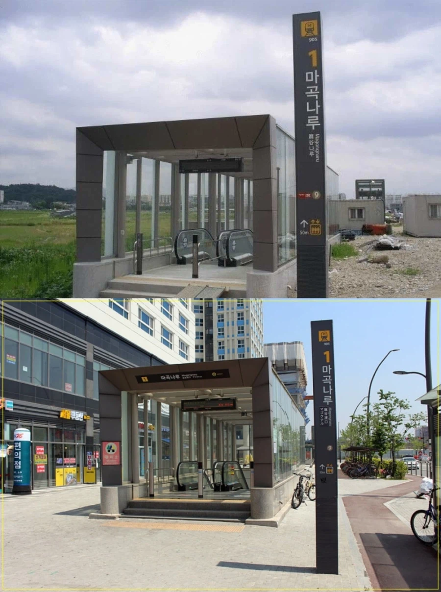
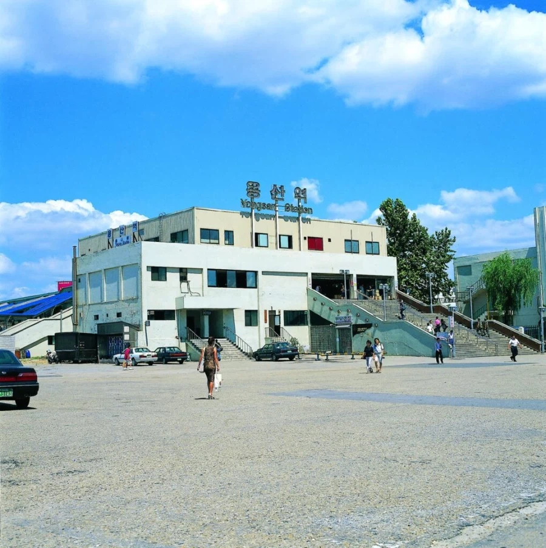
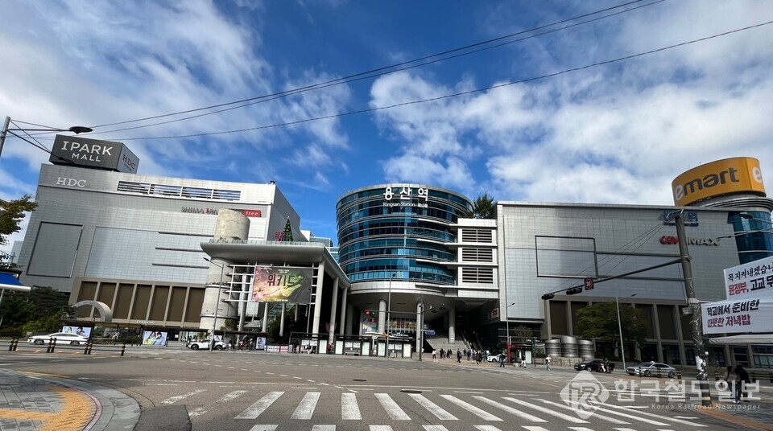
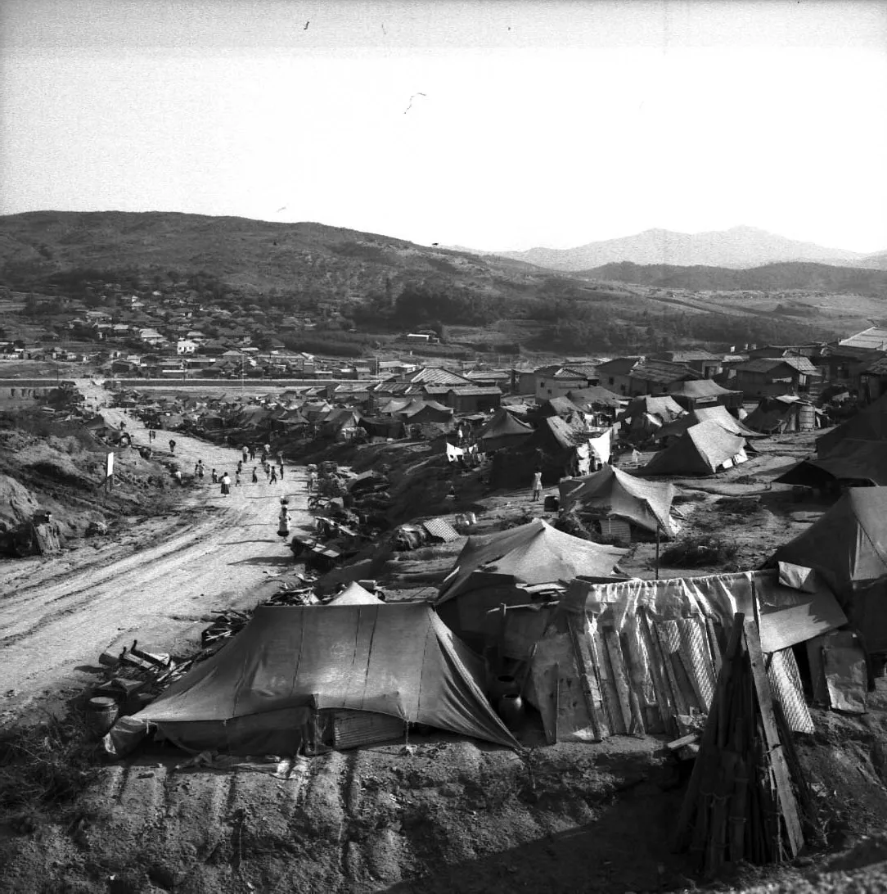
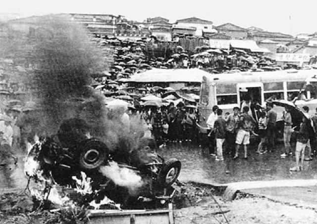
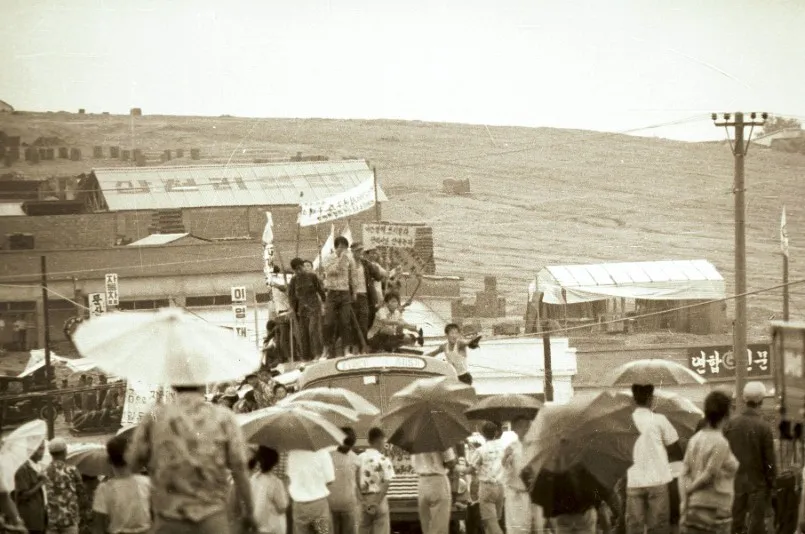
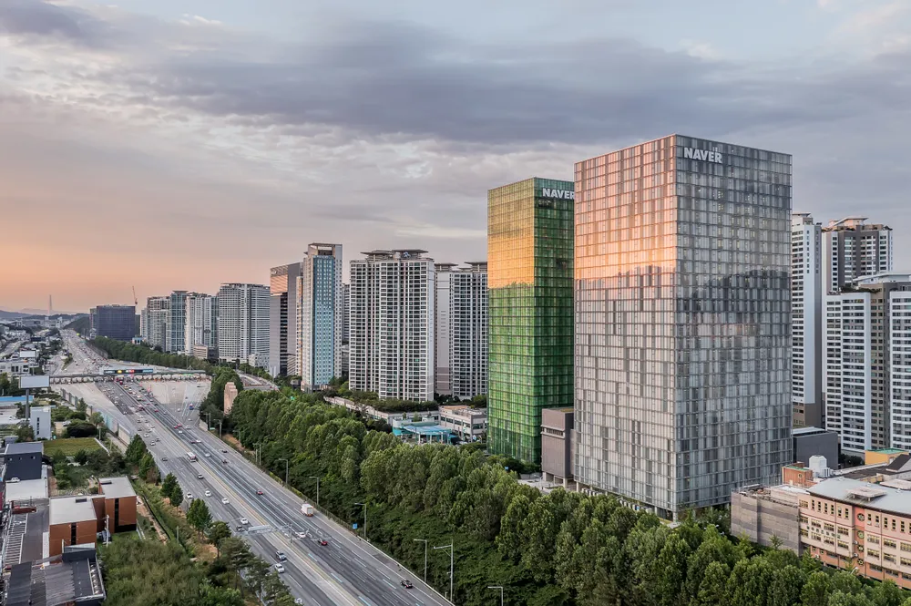

인프라 전부 만들고 그 다음에 사람 들어오게 하는거라..
근데 사람이 먼저 들어오고 인프라는 이후에 만든 곳도 있음

주민들이 주택단지에 도착해 보니 말 그대로 십만 명을 구겨넣을 수 있는 땅만 마련
1가구당 1텐트만 줌
인프라인 도로와 상하수도 시설조차 없음

그결과 시민 분노함

이후 서울로감

정부가 항복하고 그게나중에 성남시가됨
사람 없는 곳에 판 깔아야지 싸다고.........
값 오를 때 정리하면서 인프라 깔면서 쓴 비용도 회수하고 말이야